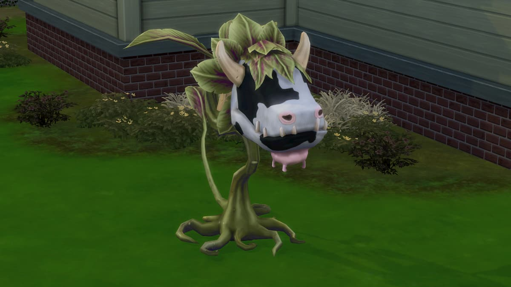

1. kérdés: Mikor adták ki először a Sims 4-et?
2. kérdés: Hogy hívják a nyelvet amit a simek beszélnek?
3. kérdés: Jelenleg hány simed lehet egy háztartásban?
4. kérdés: Hogy hívják a képen látható növényt?
5. kérdés: Hogy kerültek be a játékba a totyogók (toddlers)?
6. kérdés: Mi NEM kell ambróziasaláta készítéséhez?
7. kérdés: Melyik az a növény, amiből a legtöbb javunk lehet, ha eladjuk?
8. kérdés: Hány kiegészítő csomaggal (expansion pack) újíthatjuk a játékélményt? (2023. február)
9. kérdés: Az adott képességek közül melyik NINCS az alap játékban?
10. kérdés: Mi köze Johnny Zest-nek a Landgraab családhoz?